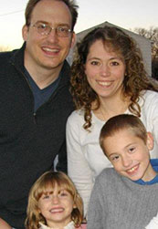

Spring Lake Elementary is a K-5 school; the target user groups would be teachers, parents, and students. I have provided two users who are most likely to visit and utilize this site.
Shay Jodi Allen – Work-at-Home Mom
Age: 30
Relationship Status: Single, Never Married
Number of Children: 1 Daughter
Education: York University, BA in Mass Communications
Work: Telus Communications from her home office
Household Income: $50,000
Needs: A typical day for Shay includes managing client's accounts, handling customer service complaints, spending quality time with her daughter as well as taking her to her various extra curricular activities.
Shay needs to be able to access things on her iPhone quickly and proficiently. She is a mom on the go; she uses her iPhone to watch episodes of her favorite TV shows, or read her favorite books as she is waiting for her daughter during her activities. She is in the process of relocating to Altamonte Springs and is trying to research the school system and choose either public or private schooling for her daughter. .
User-Workflow
Go to Spring Lake Elementary website
Look up school profile
Search for the Policies and Requirements
Research the academics in the school
Contact admissions to set up an appointment to speak with Guidance counselors or academic supervisors to continue research.

Shannon Hobby-Psensky – Elementary School Teacher
Age: 35
Location: Altamonte Springs, FL
Relationship Status: Married
Number of Children: 2, Son and Daughter
Education: Ramapo College with a Master of Science, Centenary College of NJ Graduate School in Special Education
Work: Teacher at Spring Lake Elementary
Household Income: $250,000
Needs: A typical day for Shannon involves beginning with a run in her neighborhood, followed by teaching class all day, and grading papers at night while trying to catch up on her favorite TV shows like Bones, and Hell's Kitchen. She likes to volunteer in the community when time allows for it. She loves to read, and when has a moment it is usually a dusty, tattered copy of her favorite book, The Outsiders.
Shannon
would like to be able to access her Online classroom and update homework and messages for her students. She likes to be available for her students to contact her if they need help while away from the classroom.
User-Workflow
Go to Spring Lake Elementary website
Log into teacher section/Online classroom
Post a homework assignment
Send emails to the students in the class (based on the email provided on the students profile) to notify them of new assignment
{kind=link}
{kind=link}
{kind=link}
{kind=link}